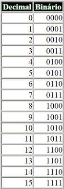
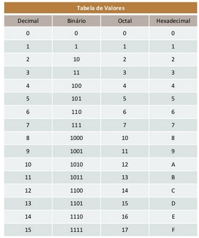
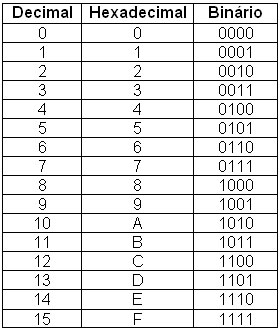
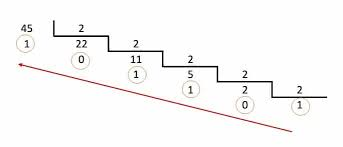
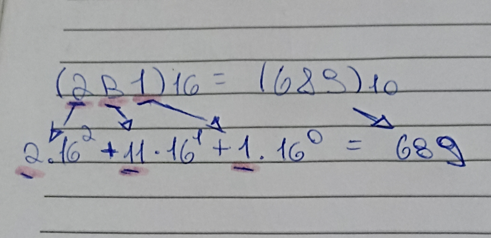

1 Trimestre - Portfólio Matemática
Atenção! Dentro deste site, será possível econtrar todo o conteúdo do 1
Trimestre em ordem, e no final estará a conclusão geral do trimestre e as dificuldades. Também será possível
acessar os links dos conteúdos utilizados no site (imagens e citações)
Materiais utilizados:
Conteúdo - Sistemas de Numeração
Este conteúdo foi o primeiro do ano, e nele aprendemos sobre alguns sistemas
numéricos, como o binário, octal e hexadecimal.
Os sistemas decimais são os números que estamos acostumados desde crianças, onde utilizam os dígitos do 0
ao 9
para formar os números.
Os sistemas binários diferentes dos sistems decimais, utilizam apenas dois dígitos, o 1 e o 0. Embaixo está
uma
tabela de conversão:

Os octais são um sistema onde utilizam apenas 8 dígitos, e para entender melhor, observe a tabela de
conversão
abaixo:

Os sistemas hexadecimais utilizam 16 dígitos em sua formação, indo do 0 ao 9 e depois do A ao F. Observe a
tabela de conversão abaixo:

Transformações - Sistemas de Numeração:
Dentro dos sistemas de Numerações, podemos converter de octal para binário,
binário
para
hexadecimal, hexadecimal para octal, e várioa outras possibilidades, mas a mais "comum" é a conversão
para
decimal. Aabaixo segue alguns exemplos de conversões para decimais.
- Conversão de Binários para Decimal:
Para convertemos, utilizamos da seguinte forma: Dividimos o número decimal por 2 e guardamos o resto, e
repetimos este processo até termos o quociente igual 1. Depois, contamos o quociente e os restos da direita
para
a esquerda, igual na imagem abaixo:

- Conversão de Octal para Decimal:
Para convertermos de octal para decimal, fazemos divisões sucessivas, parecido com o binário. Vamos
dividindo e
guardando o resto, até que não seja mais possível dividir, como na imagem abaixo.

- Conversão de Hexadecimal para Decimal:
Para fazermos esta conversão, utiizamos a regra da decomposição, que consiste em: Identificarmos os dígitos
da
direita para esquerda, e multiplicamos por 16 no expoente em que o dígito está, e depois
somamos. Exemplo:
2B1 = 2 x 16^2 + B x 16^1 + 1 x 16^0 = 689
Ou seja, 2B1 (base 16) = 689 (base 10)

Conteúdo - Conjuntos e Conjuntos Numéricos
Neste conteúdo, vimos tudo sobre conjuntos e
conjuntos numéricos, união, interseção e diferença entre eles.
Dentro de Conjuntos Numéricos, vimos como podemos agrupar certos números em diferentes conjuntos, e
utilizarmos funções para uní-las, descobrir a diferença, ou a interseção entre elas. Dentro desta aba,
mostrarei exemplos de conjuntos numéricos, e coisas que podemos aplicar entre elas, no caso a união,
interseção e diferença.
Aqui está um exemplo de como funciona uma representação de conjuntos:
Conjunto A = {0,2,4,6,8,10} Conjunto B= {1,3,5,7,9} Conjunto C= {12,21,32,34,35}
Como diz o nome, nós iremos unir dois conjuntos informados. Para unirmos dois conjuntos, utilizamos o
símbolo U. Segue um exemplo prático e fácil de entender:
Conjunto A = {0,2,4,6,8,10} Conjunto B= {1,3,5,7,9} Conjunto C=
{12,21,32,34,35}
A U B = {0,1,2,3,4,5,6,7,8,9,10}
A U C = {0,2,4,6,8,10,12,21,32,34,35}
Perceberam como os números se uniram? De forma resumida, assim funciona a união de conjuntos. Agora, iremos
ver sobre a interseção entre eles.
- Interseção entre entre Conjuntos:
Diferente da união, na interseção é anotado apenas os números em comum entre os dois conjuntos. Para
descobrirmos a interseção, utilizamos o símbolo ∩. Segue um exemplo:
Conjunto A = {0,1,2,3,4,5,8,10} Conjunto B= {1,3,5,7,9} Conjunto C={8,10,12}
A ∩ B = {1,3,5}
A ∩ C = {8,10}
B ∩ C = {Ø}
Percebam que, como o conjunto B e C não tinham nenhum número em comum, o resultado foi inexistente.
- Diferença entre entre Conjuntos:
Na diferença, é anotado apenas os números que pertencem ao primeiro conjunto. Para descobrimos a diferença,
utilizamos o símbolo - . Segue um exemplo:
Conjunto A = {0,1,2,3,4,5,8,10} Conjunto B= {1,3,5,7,9} Conjunto C={8,10,12}
A - B = {0,2,4,8,10}
A - C = {0,1,2,3,4,5}
B - C = {Ø}
Conteúdo - Dízimas Periódicas e Dízimas Compostas
Neste conteúdo, veremos o que são dízimas periódicas, dízimas compostas, e
como convertê-las para frações.
Resumidamente, dízimas periódicas são numeros que apresentam uma série infinita de algarismos decimais que,
a partir de certo algarismo, se repetem em grupos de um ou mais algarismos, ordenados sempre na mesma
disposição, chamados de período, por isso se chamam dízimas periódicas. As dízimas periódicas sempre irão
acompanhar uma barrinha nos algarismos que se repetem, ou os três pontos no final.
Exemplos: 1,333333... ou 0,̅3
- Conversão de Dízima Periódica para fração:
Para converter uma dízima periódica, utilizamos o seguinte método:

Sabemos que 2,151515... é a mesma coisa que 2 + 15/99 (99 pois 15 tem dois dígitos). Após escrevermos 2/1 +
15/99, devemos somar as frações. Após ter somado as frações, chegamos no resultado 213/99 e se dividirmos
isso na calculadoran dará 2,151515...
Agora iremos falar sobre a Dízima Periódica composta que, assim como a dízima periódica comum, também tem o
período (algarismos que se repetem) porém antes do período possuem algarismos que não se repetem. Exemplo:
0,25̅3 (Perceba que a barra está apenas em cima do 53)
- Conversão de Dízima Composta para fração:
A conversão de Dízimas Compostas para fração é muito simples, veja o exemplo:

Devemos fazer por partes. Primeiro, anotamos o número inteiro menos os números que não se repetem, como na
foto. Para identificarmos o denominador, fazemos o seguinte: Depois da vírgula, para cada número que se
repete acrescentamos o
9, e para cada número que não se repete, acrescentamos o 0, como na foto.
Conteúdo - Intervalos Reais
Os intervalos Reais são formas de representar um conjunto com uma reta indo de um extremo (ponta) a outro.
Os extremos podem ser abertos (indica que o valor da ponta não faz parte, mas adiante sim) ou fechado
(indica que o
valor da ponta faz parte e adiante também). Segue alguns exemplos de Intervalos Reais:

Quando a bolinha estiver vazia, significa que tal valor não está presente, mas tudo aquilo dentro da reta
sim. Já a bolinha preenchida dentro, representa que tal valor está presente e tudo dentro da reta também.
Outros sinais que indicam que estão abertos ou fechados são:
Fechados: ≤ ≥ , { } , [ ]
Abertos: <> , ( ) , ] [
Quando você for escrever um intervalo real, deve ser escrito desta forma: {X ∈ R / A < X ≤ B} ou {X ∈ I/ A
≤ X < B}
Claro, existem diversas formas de escrever um intervalo real, como substituindo o conjunto
numérico a ser utilizado, se A vai ser aberto ou fechado, se B vai ser aberto ou fechado, enfim, o
intervalo acima foi um mero exemplo.
Conteúdo - Funções Afim
Uma função é uma relação entre duas grandezas/variáveis. Uma função afim é uma função de primeiro
grau e é geralmente representada por f(x) = a*x + b
Exemplo utilizado na aula: Um preço de estacionamento de automóveis é cobrado da seguinte maneira:
uma taxa fixa de R$5,00 mais R$3,00 por hora de permanência. O preço pago irá depender da quantidade
de horas que o motorista irá ficar no estacionamento, ou seja, o valor A são os 3 reais por hora, o
X são as horas e o B é o valor fixo a ser pago, que no caso são 5 reais. Caso o motorista ficasse
duas horas, assim ficaria a equação: (OBS: A CITAÇÃO ACIMA ESTARÁ FIXADA NO DOCUMENDO DE CITAÇÕES).
f(x) = a*x + b ⇨ f(2) = 3*2 + 5 ⇨ R$11,00
Claro, uma função também pode ser utilizada para definir o lucro mensal de uma empresa e a
quantidade de unidades vendidas
durante o mês, a área de uma superfície e a medida de suas dimensões, O volume de um sólido e a
medida das dimensões desse sólido, dentre outras diversas funções.
Para entendermos este conceito matemático, podemos pensar numa máquina de funções. Dentro desta
máquina, podemos aplicar uma função, para transformar um conjunto de entrada X para um conjunto de
saída Y. Segue o exemplo: (OBS: A CITAÇÃO UTILIZADA ESTARÁ NO DOCUMENTO DE CITAÇÕES).

Conclusão Final e Dificuldades:
Confesso que até pegar o ritmo de como funciona as formas de esnino
e
avaliação do IF fiquei meio perdido, mas estou conseguindo acompanhar a matéria tranquilamente.
Gostei
muito deste trimestre, e espero que eu consiga me dedicar ao máximo e fazer melhor no próximo
trimestre.
Achei interessante a atividade com o scratch e achei muito legal a ideia de fazermos um
portfólio do
conteúdo, pois teoricamente estamos nos preparando para quando formos fazer um curso superior.
Sobre a
questão da dificuldades, tive apenas em acompanhar o sconteudos de conjunto numerico no inicio,
mas logo
depois peguei o jeito e entendi bem, e em relação às atividades e
trabalhos foi super tranquilo.
Voltar à página inicial:
Voltar ao topo